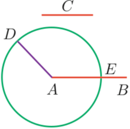

Proposizione I.3
Proposition I.3. Given two unequal segments, we may cut off from the longer a segment congruent to the smaller.
Proof. Let AB and C be two unequal line segments and let AB be the longer. Use Prop. I.2 to form the segment AD congruent to C. Form the circle with center A and radius AD. Let E be the point where this circle intersects AB. Now AE ≌ C.□